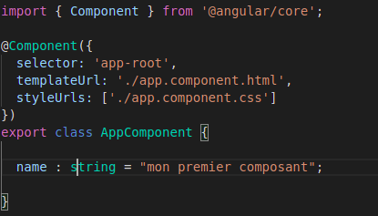
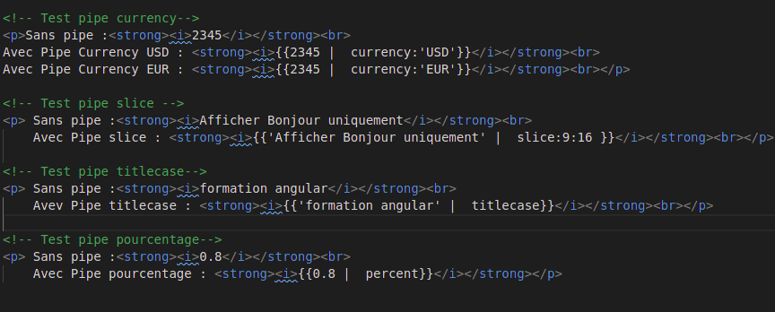
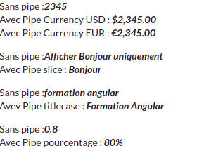
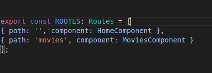
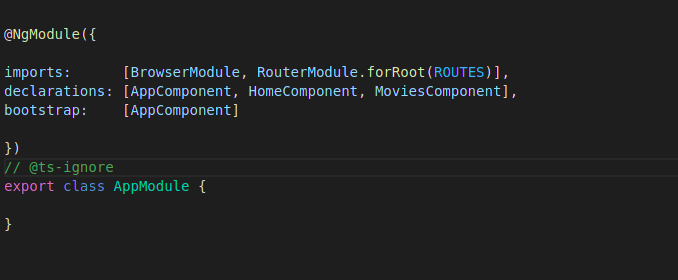
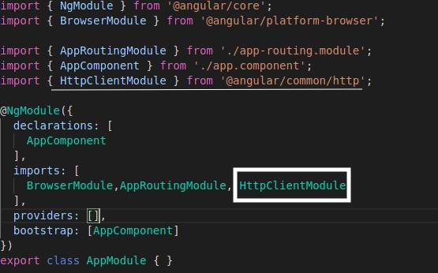
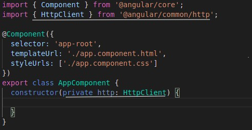

Formation ANGULAR
Zied ZAYANI - Jasmine Conseil
JavaScript
Langage de programmation de scripts dynamiquement typé, employé dans les pages web pour rendre notre application dynamique. Java script est standardisé par ECMA:
<script>
alert("Message d'alert par java script");
</script>
ECMA SCRIPT 6
La version de la spécification que vous connaissez le plus est la version 5, la version ES6 ajoute plusieurs fonctionnalités à JavaScript comme :
- Les classes
- Les constantes
- Set et Map
- Template de string
- Arrow Functions (fonction flèche)
- ...
TypeScript
Type script est un langage compilé en javascript, c’est un surcouche de la syntaxe Javascript, il ajoute quelques fonctionnalité:
- Types (String , number , any ...)
- Classe
- Interface
- ...
Syntaxe :
let variable : type ;
Exemples :
let name : string = "angular" ;
let contactNumber : number = 4;
let isContact : boolean = true ;
WebComponent
Les web component nous permet d’avoir des composants réutilisable et encapsulé, ils se basent sur un ensemble de standards
- Custom elements
- Shadow DOM
- Template
La philosophie d’Angular
- Angular est un framework orienté composant
- Un composant est un groupe d’éléments HTML, dans un template, dédiés à une tâche particulière
- Les composants seront organisés de façon hiérarchique, comme le DOM
Exemple composant Angular
Conception d'une composante

DATABINDIG
- Interpolation : {{user.name}}
- Binding de propriété :<p [textContent]="user.name"> </p>
- Événements :<button (click)="function()">Click!</button>
ANGULAR CLI
Angular CLI est un outils en ligne de commande pour simplifier les tâches de développements d'Angular :
- Création du projet
- Génération de composants
- Exécutions des tests
- Dépoloiement
- ...
LAB 1 :
- Création d'un projet Angular avec Angular CLI
- Comment créer et utiliser des composants
- Gestion des données entre le composant et le template
- Binding de propriété
- Événements
Les directives
Une directive est semblable à un composant, sauf qu’elle n’a pas de template. Techniquement, la classe Component hérite de la classe Directive dans le framework
Il y a deux types de directives :
- Les directives d’attributs
- Les directives structurelles
Les directives d’attributs
Elles peuvent modifier le comportement des éléments HTML, des attributs, des propriétés et des composants. Elles sont représentées habituellement par des attributs au sein de balises HTML
exemples :
- NgClass
- NgModel
Les directives structurelles
ces directives sont responsables de mettre en forme une certaine disposition d’éléments HTML, en ajoutant, retirant ou manipulant des éléments
exemples :
- ngFor
- ngIf
- ngSwitch
Les pipes
Les données brutes n’ont pas la forme exacte que l’on voudrait afficher dans la vue. On a envie de les transformer, les filtrer, les tronquer, etc
Angular nous offre les pipes pour faire ce travail
Un pipe peut être utilisé dans le HTML, ou dans le code applicatif
Exemples:
- slice : Afficher un sous-ensemble d’une collection
- uppercase et lowercase
- number : Formatter un nombre
- percent : Afficher un pourcentage
- currency : Formater une somme d’argent dans la devise que tu veux
- date : Transforme une date en chaîne de caractères au format désiré
Exemples Pipe
Résultat Pipe
LAB 2
- Utilisation des directives
- Utilisation d'une classe DTO avec TypeScript
- Paramétrage de composant avec le décorateur @Input
- Transfert des données vers le composant parent avec @Output
- Utilisation Pipe dans HTML
- Utilisation Pipe dans le code
Injection de dépandences
L’injection de dépendances est un design pattern. Un composant de notre application peut avoir besoin de faire appel à des fonctionnalités qui sont définies dans d’autres parties de l’application. C’est ce que l’on appelle une dépendance : le composant dépend du service. Au lieu de laisser au composant la charge de créer une instance du service, l’idée est que le framework crée l’instance du service lui-même, et la fournisse au composant qui en a besoin. Cette façon de procéder se nomme l’inversion de contrôle.
Services
Angular propose le concept de services :
Les services sont des classes qu'on peut injecter dans des composantes ou dans des autres services.
Angular fournis quelques services par défaut:
- Service Title
- Service Meta
Création d'un service
- Un service est une classe TS
- Il faut lui ajouter le décorateur @Injectable()
- Un service est un singleton, donc la même instance unique sera injectée partout
LAB 3 :Services et Injection
- Création d'un service
- Utilisation d'un service dans un composant
Modules
Un module dans Angular est un mécanisme permettant de regrouper des composants,services,directives, pipes etc ...
Routing
L'ojectif du routeur dans Angular est de permettre d’avoir des URLs compréhensibles qui
reflètent l’état de l'application, et déterminer pour chaque URL quels composants utiliser dans la page.
Tout cela sans rafraîchir la page et sans lancer de requête auprès de notre serveur : c’est tout l’intérêt d’avoir
une
Single Page Application
C’est un module optionnel , il n’est pas inclus dans le noyau du framework
Routing
Comment ça marche ?
1 : Associations entre les URLs et les composants:

- path : quelle URL va déclencher la navigation
- component : quel composant sera initialisé et affiché
2 : Intégration de la configuration:

Pour que le composant soit inclus dans notre application, il faut utiliser le tag <router-outlet> dans le template du composant principal
LAB 4 :ROUTING
- Utilisation de module Router
- Mise en place des routes
- Navigation et autorisation
Formulaires
Angular offre deux façon pour gérer les formulaires:
- Formulaire piloté par le template
- Formulaire piloté par le code
FormControl
C’est la plus petite partie d’un formulaire, et il encapsule l’état du champ et sa valeur:
Un FormControl a plusieurs attributs :
- valid : si le champ est valide
- invalid : si le champ est invalide
- errors : un objet contenant les erreurs du champ
- value : la valeur du champ
FormGroup
FormGroup c'est une classe Angular qui répresente un groupe de formulaire
Un FormControl a plusieurs attributs :
- valid : si tous les champs sont valides, alors le groupe est valide
- invalid : si l’un des champs est invalide, alors le groupe est invalide
- errors : un objet contenant les erreurs du groupe, ou null si le groupe est entièrement valide
Formulaire piloté par le template
Dans cette méthode, on va mettre de directives dans notre formulaire, et Angular va construire les instances de FormControl et FormGroup nécessaires automatiquement
Formulaire piloté par le code
Angular nous donne la possibiliter de manipuler les formulaires directement depuis le code en utilisant la classe utilitaire FormBuilder. C’est plus verbeux mais plus puissant.
FormBuilder est une classe utilitaire, avec plein de méthodes bien pratiques pour créer des contrôles et des groupes.
Validation
Les validateurs fournis par le framework :
- Validators.required pour vérifier qu’un contrôle n’est pas vide
- Validators.minLength(n) pour s’assurer que la valeur entrée a au moins n caractères
- Validators.maxLength(n) pour s’assurer que la valeur entrée a au plus n caractères
Validation
- Validators.email() pour s’assurer que la valeur entrée est une adresse email valide
- Validators.min(n) pour s’assurer que la valeur entrée vaut au moins n
- Validators.max(n) pour s’assurer que la valeur entrée vaut au plus n
LAB 5 :Formulaires
- Création d'une formulaire piloté par le code
- Intégration de validation
HTTP
- Une application web dynamique permet d'envoyer et de recevoir des données par HTTP
- Angular offre le module HttpClientModule
- HttpClientModule est un module indépendant, vous pouvez utiliser un autre framework
Import du module HTTP
Utilisation du module HTTP
Les méthodes HTTP
HttpClient propose plusieurs méthodes, correspondant au verbes HTTP communs :
- Get
- Post
- Delete
- Patch
- Put
Toutes ces méthodes retournent un objet Observable
Intercepteurs
Le role de l'intercepteur est d'intercepter toutes les requêtes pour les modifier, par exemple pour ajouter un header particulier à certaines d’entre elles
L'intercepteur c'est un service qui hérite de HttpInterceptor
LAB 6 :HTTP
- Utilisation de service HttpClient
- Mise en place d'un intercepteur